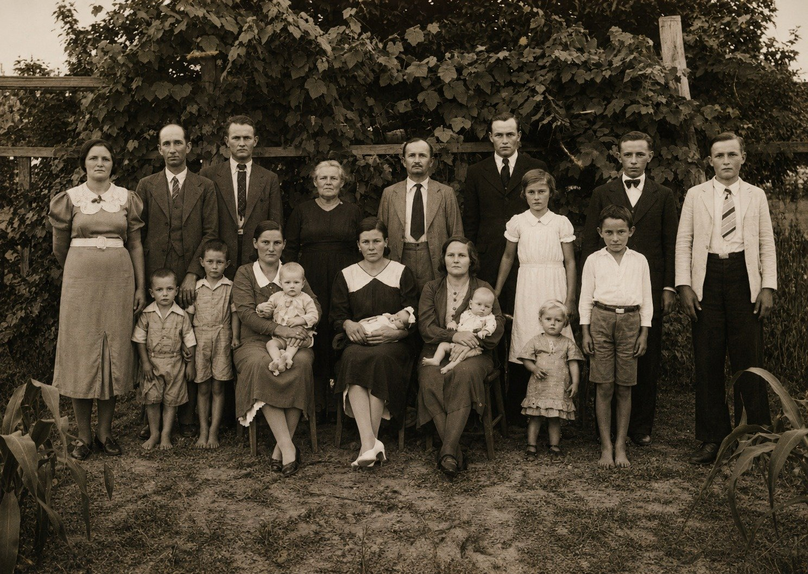

Teil I · Echos im Bergland von Santa Catarina
Kapitel 2 — Zwei Wörter mit bayerischem Akzent: Fata, Mota und das Rätsel von Heumaden
49,6° N · 12,4° O, Heumaden, Moosbach, Oberpfalz
Ein richtiger Wert am falschen Ort verdirbt die ganze Karte.
Neun Gesichter
Eines der Kinder auf dieser Fotografie ist mein Vater, und ich kann nicht mit Sicherheit sagen, welches. Sie liegt seit Jahren auf meinem Schreibtisch, erst auf Papier, später auf dem Bildschirm. Bevor ich sage, wer die Menschen darauf sind, möchte ich sie mit euch anschauen, als kennten wir sie nicht, so wie ein Beobachter eine Wetterkarte betrachtet, bevor er Schlüsse zieht.
Es sind neun Personen, die im Freien stehen, vor einem dunklen Tuch, das als Hintergrund aufgespannt ist, und rechts vor einem Stück unverputzter Ziegelmauer. Der Boden ist aus gestampfter Erde. In der Mitte hält eine Frau in einem hellen, langen, schlichten Kleid, das Haar hochgesteckt, ein Baby mit rundem Gesicht auf dem Arm. Sie lächelt nicht; sie blickt in die Kamera mit einem zugleich festen und müden Ausdruck, dem Ausdruck eines Menschen, der viel zu tun hat und eingewilligt hat, für eine Minute innezuhalten. Vor ihr sitzt auf einem Stuhl, der mit einem Fell oder einem flauschigen Tuch bedeckt ist, ein kleines Mädchen in einem weißen Kleid, mit einem Blumenstrauß auf dem Schoß und dem misstrauischen Blick von Kindern, die nicht verstehen, warum sie stillhalten müssen. Dahinter zwei etwas größere Mädchen, ebenfalls in Weiß, eine von ihnen mit einer Blume im Haar.
Links zwei junge Männer in dunklen Anzügen, der größere mit gestreifter Krawatte, der andere mit der Hand auf der Brust, in einer Pose, die wohl irgendein Fotograf vorgeschlagen hat. Rechts eine fast erwachsene junge Frau in hellem Kleid und mit kurzem Haar, die Blumen hält. Und zwischen ihr und den Kindern ein Mann in Anzug, Weste und Krawatte, das Haar sorgfältig gekämmt, der Schnurrbart gestutzt, die Hände seitlich herabhängend. Er ist der Einzige, der vor der Kamera entspannt wirkt, obwohl auch er nicht lächelt.
Niemand sieht den anderen an. Alle blicken nach vorn, zum Fotografen, zu uns.
![Johann Haas, der Fata (Zweiter von rechts), und Maria Meier Haas, die Mota (in der Mitte, mit dem Baby auf dem Arm), mit den sieben Kindern, die sie in Santa Catarina großzogen. Nach dem sichtbaren Alter der Kinder dürfte das Foto aus der zweiten Hälfte der 1920er-Jahre stammen, schon in Ituporanga; wer welches Kind ist, muss noch mit den Cousins geklärt werden. Familienarchiv. Mit KI restaurierte Fassung; das Original liegt im Repositorium, und Einzelheiten der Gesichter können retuschiert sein.](imagens/foto_familia_johann_haas_e_maria_meyer_restaurada.jpg)
Der Mann mit dem Schnurrbart ist Johann Haas, der Fata. Die Frau in der Mitte ist Maria Katharina Meier Haas, die Mota. Die sieben Kinder und Jugendlichen sind die Kinder, die sie in Santa Catarina großzogen: Gertrudes, Fernando, Alexandre, Agnes, Elza, Baldoíno und Maria. Eines davon ist mein Vater. Das Baby auf dem Arm der Mutter dürfte die Jüngste sein, Maria, geboren 1926, was die Fotografie auf etwa 1927 datieren würde; das Kind, das vorne sitzt, könnte mein Vater sein, mit drei oder vier Jahren, in Weiß gekleidet, wie man damals kleine Jungen anzuziehen pflegte; es könnte aber auch jemand anderes sein, und ich will aus einer Vermutung keine Bildunterschrift machen. Die beiden jungen Männer im Anzug wären Fernando und Alexandre, und die junge Frau rechts Gertrudes, die Älteste. All das ist aus dem sichtbaren Alter erschlossen. Ich muss mich noch mit den Cousins zusammensetzen und Gesicht für Gesicht prüfen.
Was ich mit Sicherheit weiß, ist, was auf der Fotografie fehlt. Es fehlen Hildegard und Frida, die beiden ersten Töchter, die vor der Reise in Deutschland starben. Es fehlen Luisa und Walter, die mit den Eltern den Ozean überquerten und klein starben; wo, darüber sind sich die Quellen der Familie nicht einig, und dieser Widerspruch bleibt für das nächste Kapitel. Und es fehlt João, der noch nicht geboren war und der ebenfalls klein sterben sollte. Wenn ich dieses Foto betrachte, suche ich auch nach den Abwesenden.
Der Fata
Die Enkel nannten ihn Fata. In meiner Kindheit hielt ich das für einen Spitznamen, eines jener erfundenen Wörter, die kleine Kinder benutzen und die die Familie übernimmt. Ich habe lange gebraucht, um zu verstehen, dass es einfach Vater war, so ausgesprochen, wie die Kinder ihn zu Hause riefen, und mit den brasilianischen Ohren der Enkel gehört. Genauso bei der Mota: Mutter. In dem Text, den meine Schwester Marise 2013 zum hundertsten Jahrestag der Ankunft schreiben sollte, verwendet sie beide Formen nebeneinander, Vater (Fata), Mutter (Mota), als würde sie übersetzen und zugleich bewahren. Die Enkel erbten von den Kindern das Wort für Vater und das Wort für Mutter und machten Eigennamen daraus. In keiner anderen Familie kenne ich Großeltern, die so genannt wurden, und ich denke gern, dass das etwas über jenes Haus aussagt: Die Kinder sprachen so viel und so selbstverständlich mit ihren Eltern, dass das gewöhnliche Wort zum Namen wurde.
Johann Haas wurde im Juli 1884 in Bayern geboren. Er stammte aus einer Maurerfamilie und spezialisierte sich auf ein Handwerk, das heute fast verschwunden ist: die Stuckarbeit. Er machte Fensterumrahmungen, Portaleinfassungen, Altarornamente, all das, was in den Kirchen und den reicheren Häusern Europas jener Zeit dem rohen Mauerwerk den letzten Schliff gab. Es war eine Arbeit, die eine sichere Hand und ein Künstlerauge verlangte, und er sollte sie in ein Land mitnehmen, in dem kaum jemand Geld für Ornamente hatte.
In Brasilien rettete ihn diese Fertigkeit mehr als einmal. In den ersten Jahren, auf trockenem, saurem Boden im Hinterland von Anitápolis, wo der Ackerbau kaum zum Essen reichte, war es der Gips, der das Brot kaufte: Er begann, Grabmäler aus Terrazzo für die Friedhöfe der Gegend herzustellen, verziert mit Mustern und mit von Hand modellierten Engeln. Später, in Ituporanga, ernährte ihn das Maurerhandwerk, und er brachte es seinen Söhnen bei. Die Familie baute in der Stadt die Hauptkirche, das Pfarrhaus, das Franziskanerseminar und die Erweiterung des Schwesternkrankenhauses. Sie baute auch Häuser, Schulen, Backöfen, Herde, Treppen und Sägewerke in der ganzen Gegend, nicht immer mit seinen eigenen Händen, aber mit den Händen derer, die bei ihm gelernt hatten.
Was in den Erinnerungen aber am häufigsten auftaucht, ist sein Wesen. „Unser João war verspielt und lustig: ein Witzbold“, schrieb Marise. Er ließ keine Gelegenheit aus, etwas Komisches zu sagen. Die Enkel, die in seinen letzten Jahren in Ribeirão das Pacas mit ihm zusammenlebten, erzählen, dass sie sich gern in seine Nähe setzten, um Geschichten zu hören, vor allem wenn er ein paar Bier getrunken hatte, wenn sich die Zunge löste und Deutschland wieder in den Gesprächen auftauchte.
Er war auch ein Mann, der las. Das ist ein Detail, das mich rührt, vielleicht aus Berufskrankheit. Sie waren arme Einwanderer, wie die meisten, die in die Kolonien kamen, aber, wie es im Text zum hundertsten Jahrestag heißt, gebildet. Sie brachten Bücher aus Deutschland mit, und diese Bücher wurden im Haus im Wald immer wieder gelesen. Später hatte die Familie Zeitungen abonniert, vor allem solche aus der Gegend von Blumenau, wo die deutschsprachige Presse noch stark war, um die Nachrichten aus Brasilien und aus dem fernen Land zu verfolgen. Ich stelle mir den Fata vor, abends nach einem ganzen Tag auf der Baustelle, wie er beim Licht der Petroleumlampe eine Woche alte Zeitung aus Blumenau liest und nach einer Nachricht aus Bayern sucht. Ich weiß nicht, ob die Szene genau so stattgefunden hat. Ich weiß, dass etwas Ähnliches oft stattgefunden hat.
Und es gab noch eine Fertigkeit, die ich erst viel später verstand und die sich als Spur erweisen sollte. Laut dem Text zum hundertsten Jahrestag wurde Johann häufig als Dolmetscher gerufen, weil er mehrere deutsche Mundarten beherrschte. Wenn man heute an Deutsch denkt, denkt man an eine einzige Sprache, die des Radios und der Bücher. Aber das Deutschland, in dem er geboren wurde, war als Staat erst seit dreizehn Jahren geeint, und als Sprache war es davon weit entfernt. Ein Bauer aus Pommern und ein Bauer aus Bayern konnten echte Schwierigkeiten haben, einander zu verstehen. In den brasilianischen Kolonien, wo sich Einwanderer aus allen Regionen mischten, war jemand, der sich zwischen diesen Mundarten bewegen konnte, wertvoll. Für den, der forscht, war es auch ein Zeichen: Der Fata hatte ein geschultes Ohr für Akzente, und sein eigener Akzent verriet, woher er kam.

Die Mota
Wenn der Fata die Stimme des Hauses war, dann war die Mota der Boden.
Maria Katharina Meier wurde im April 1888 in Heumaden in Bayern geboren. Aus welchem Haus sie stammte, erfuhr ich erst viel später. Bevor sie nach Brasilien aufbrach, verdiente sie neben der Hausarbeit einen Lohn mit Kühemelken. Nach der Familienüberlieferung war sie es, die sich mit der Feldarbeit auskannte, und wahrscheinlich war sie der praktische Rückhalt des ganzen Abenteuers: Der Fata konnte Mauern bauen, aber wer wusste, wie man die Erde zum Tragen bringt, die Tiere versorgt und mitten im Busch einen Haushalt am Laufen hält, das war die Mota.
In den Jahren in Rio Novo, als die Familie in einem kleinen Haus mitten im Wald lebte, verbrachte der Fata tagelang in der Stadt, wo er als Maurer arbeitete. Die Mota blieb allein mit den Kindern. Sie versorgte das Feld, die Tiere, die Kinder und verteidigte sich, in den Worten des Textes zum hundertsten Jahrestag, so gut sie konnte, den Blick immer auf den Weg gerichtet, in Erwartung des Mannes, der die Vorräte brachte, die das Land nicht hergab. In diesem Haus wurden Agnes, Elza, mein Vater und Maria geboren. Ich denke oft an sie, wenn vom Mut der Pioniere die Rede ist. Den Mut, sich dem Unbekannten zu stellen, schreibt man gewöhnlich denen zu, die aufbrechen. Es gibt auch den Mut derer, die bleiben, allein, auf einer Lichtung, mit vier oder fünf kleinen Kindern, und den Geräuschen der Nacht lauschen.
Sie hat nie Portugiesisch gelernt. Der Kontakt mit Menschen, die diese Sprache sprachen, war gering; ihr Leben spielte sich zwischen Haus, Feld, Familie und Kirche ab, und an all diesen Orten sprach man Deutsch. Als die Enkel geboren wurden, viele von ihnen schon ohne Deutschkenntnisse, tat sich zwischen der Großmutter und ihnen eine Entfernung auf, die keine der beiden Seiten gewählt hatte. Marise erzählt, dass dies die Verständigung sehr erschwerte, die Mota aber nicht daran hinderte, das Herz der Enkel mit Blicken, festen Gesten und dem zu berühren, was sie liebevoll ihr „Brummeln“ nennt. Ich mag dieses Wort. Ich stelle mir eine weißhaarige alte Frau vor, die auf Bairisch vor sich hin brummelt, vor einem Kind, das kein Wort versteht und trotzdem alles versteht.
In den letzten Jahren, in Ribeirão das Pacas, ging die Mota auf Stöcke aus Holzstücken gestützt über das Feld. Die Enkel, die ihr am nächsten waren, die Kinder von Agnes und Maria, die in der Nähe wohnten, halfen ihr, sie zu halten. Sie sind es, die die lebendigsten Erinnerungen an sie bewahren, und sie sind es, die mir in diesem Kapitel fehlen: Ich muss noch jeden von ihnen in Ruhe anhören, mit Aufnahmegerät, und um Erlaubnis bitten, das Gesagte zu zitieren. Vorerst habe ich die Zusammenfassung, die Marise aus vielen Stimmen gemacht hat, und ein Bild, das in allen wiederkehrt. Die Mota umarmte. „Sie ließ keine Gelegenheit aus, zu umarmen, zu umarmen, zu umarmen“, schrieb meine Schwester. Und sie hatte blaue Augen, die der Text unendlich sanft nennt.

Auf dieser anderen Fotografie, die die Familie als das Bild der ersten Enkel aufbewahrt, erscheint die Mota in einem dunklen Kleid, schon mit hellem Haar, stehend inmitten von Söhnen, Töchtern, Schwiegersöhnen, Schwiegertöchtern und Enkeln, unter einer dicht belaubten Weinlaube. Sie ist die Einzige, die mit so etwas wie einem halben Lächeln in die Kamera schaut. Neben ihr, mit dunkler Krawatte, der Fata. Die Kinder vorn sind barfuß, wie die Kinder in den Kolonien gewöhnlich herumliefen, und die Mütter halten die Babys mit der Selbstverständlichkeit von Menschen, die Übung darin haben. Ich kenne nicht die Namen aller Personen auf dem Foto und will nichts riskieren. Ich weiß, dass es ein Erntebild ist: Gut zwanzig Jahre, nachdem sie mit zwei Kindern, die nicht groß werden sollten, in Brasilien angekommen waren, standen die beiden da, umgeben von Menschen, die es nur gab, weil sie geblieben waren.
João Haas starb am 19. März 1969 und Maria am 8. November 1973, beide mit fünfundachtzig Jahren. Sie sind auf dem Friedhof von Aurora begraben, nahe bei vielen Gräbern, die er selbst gemacht hat.
Zwei Wörter
Lange Zeit passte alles, was die Familie über die genaue Herkunft der beiden wusste, in zwei Wörter.
Auf der Seite der Mota war das Wort Heumaden. Auf der Seite des Fata Sandberg, manchmal begleitet von Leonberg. Es waren Wörter, die mehr gesprochen als geschrieben wurden, und sie veränderten sich ein wenig, je nachdem, wer sie aussprach. In der Tabelle, die mein Cousin Agenor über Jahre zusammengetragen hat und von der ich im nächsten Kapitel erzählen werde, erscheint das Dorf der Mota als Heimaden geschrieben, mit i, und Johann erscheint als geboren „in Leonberg, das heute Maxhütte heißt und im Bundesland Bayern liegt“. Das war viel mehr, als ich hatte. Es war auch, wie ich herausfinden sollte, ein Minenfeld.
Der Unterschied zwischen Heumaden und Heimaden scheint klein, ein Vokal, aber er sagt viel darüber, wie Namen reisen. Ein Wort, das neunzig Jahre lang von Mund zu Mund weitergegeben wird, von Menschen, die die Ursprungssprache nicht mehr sprechen, passt sich allmählich dem Ohr derer an, die es wiederholen. In Heumaden steckt das Heu, und der Rest des Namens erinnert an die Mahd, und das Dorf ist, so stelle ich mir vor, wohl aus irgendeiner Heuwiese entstanden, die im Sommer gemäht wurde, um das Vieh im Winter zu füttern. Heim dagegen ist das Zuhause. Ich weiß nicht, ob der Tausch von dem kam, der zuhörte, oder von dem, der schrieb, und ich habe keine Möglichkeit, es herauszufinden. Aber ich finde es schön, dass das Heudorf auf seinem Weg durch das Gedächtnis von drei brasilianischen Generationen einem Heimatdorf ähnlich geworden ist.
Die Namen der Menschen erlitten denselben Verschleiß. Aus Meier wurde in vielen brasilianischen Papieren Meyer, und beide Schreibweisen bestehen bis heute in den Dokumenten der Familie nebeneinander. Aus Johann wurde João, und Maria bekam im Gedächtnis der Familie ein Katharina dazu, das im Taufbuch der Name der älteren Schwester war. In der Tabelle erscheint der Vater der Mota als Adam Meyer und die Mutter als Franciska Meyer, mit dem Familiennamen des Mannes, wie man verheiratete Frauen damals einzutragen pflegte. Jede dieser kleinen Veränderungen ist harmlos. Zusammengenommen können sie einen Menschen in einem Archiv auf der anderen Seite des Meeres unkenntlich machen.
Für einen Meteorologen besteht eine Beobachtungsstation aus zwei Dingen: einer Reihe von Messwerten und einer Position. Die Messwerte allein nützen nichts. Eine Temperatur von minus zwei Grad um sechs Uhr morgens ist eine banale Angabe, wenn die Station auf einem Berggipfel steht, und ein Alarmsignal, wenn sie in einer Küstenniederung steht. Deshalb hat jede Station Koordinaten: Breite, Länge, Höhe. Und deshalb ist einer der tückischsten Fehler, die man bei der Datenanalyse machen kann, der Positionsfehler: ein richtiger Messwert, der dem falschen Ort zugeordnet wird. Er sieht nicht falsch aus. Die Zahlen sind plausibel, das Format ist tadellos, nichts fällt auf. Aber sobald er in die Karte eingeht, verfälscht er alles um sich herum. Das Analyseprogramm passt die Isolinien an, um diesen Wert unterzubringen, und was ein glattes Feld sein sollte, bekommt eine seltsame Blase, einen falschen Kälte- oder Wärmekern, der einen unaufmerksamen Vorhersager davon überzeugen kann, dass dort etwas ist, wo nichts ist.
Die Ortsnamen in einer Genealogie funktionieren wie die Koordinaten einer Station. Wenn sie stimmen, fügen sich die Messwerte, die Daten, die Namen der Eltern, die Berufe, zu einer stimmigen Karte. Wenn sie falsch sind, wird alles, was danach kommt, auf einem verschobenen Punkt errichtet. Und die Namen deutscher Dörfer sind besonders tückisch, weil sie sich wiederholen.
Die Gefahr der Namensvettern
Man braucht nur die beiden Wörter in eine Internetkarte einzugeben, um das Problem zu verstehen.
Leonberg ist für jeden Deutschen und für die meisten Karten eine Stadt in Baden-Württemberg, etwa fünfzehn Kilometer westlich von Stuttgart. Es ist eine bekannte Stadt mit historischer Altstadt, einem Schloss, einer Rasse riesiger Hunde, die ihren Namen trägt, und einer Autobahn, die daran vorbeiführt. Wer „Leonberg, Deutschland“ sucht, landet fast immer dort. Und Heumaden gibt es, durch einen Zufall, der wie absichtlich eingefädelt wirkt, ebenfalls in der Umgebung von Stuttgart: Es ist ein Stadtteil von Stuttgart selbst, im Bezirk Sillenbuch, etwa zwanzig Kilometer von Leonberg entfernt.
Stellt euch die Versuchung vor. Ein brasilianischer Forscher mit zwei Wörtern, die fast hundert Jahre lang mündlich überliefert wurden, gibt die beiden Namen ein und entdeckt, dass beide existieren, Seite an Seite, im selben Ballungsraum im Südwesten Deutschlands. Es sieht aus wie ein Fund. Es sieht aus wie die Bestätigung, dass die ganze Familie, Fata und Mota, aus derselben Gegend stammte, was erklären würde, wie die beiden sich kennengelernt hatten. Die Daten sind plausibel, das Format ist tadellos, nichts fällt auf. Es ist der Positionsfehler in Reinform.
Ich werde hier nicht behaupten, dass ich in diese Falle getappt bin, denn ich habe keine Aufzeichnung darüber, und ich will keinen Fehltritt erfinden, um die Geschichte dramatischer zu machen. Aber ich weiß, dass sie auf dem Weg aufgestellt war, und ich weiß, dass viele Familienforscher, in Brasilien und anderswo, schon Monate in gleichnamigen Städten verloren haben, in Archiven, die nie ein einziges Papier ihrer Vorfahren aufbewahrt hatten. Die Genealogieforen sind voll von solchen Geschichten. Deshalb widme ich ihr ein paar Zeilen: damit ihr, wenn ihr diese Forschung eines Tages fortsetzt, wisst, dass das erste Ergebnis auf der Karte fast nie das richtige ist.
Es gab mindestens drei Anzeichen dafür, dass die Gegend um Stuttgart nicht die Antwort war. Das erste stand in Agenors eigener Notiz: Leonberg, sagte er, liege in Bayern und habe seinen Namen in Maxhütte geändert. Das Leonberg bei Stuttgart war nie bayerisch und hat auch nie seinen Namen geändert. Das zweite war das Wort Sandberg, das auf keiner Karte in der Nähe von Stuttgart auftauchte. Das dritte war der Akzent.
Die Mundarten rund um Stuttgart sind schwäbisch, aus der alemannischen Familie, verwandt mit den Mundarten der deutschen Schweiz und des Elsass. Die bayerischen gehören zu einer anderen Familie, der bairischen, verwandt mit den Mundarten Österreichs. Für ein brasilianisches Ohr ist das alles Deutsch. Für einen Deutschen ist es der Unterschied zwischen einem Gaúcho aus dem Grenzland im äußersten Süden Brasiliens und einem Nordestino aus dem Sertão, dem trockenen Hinterland des Nordostens, und manchmal mehr. Der Titel dieses Kapitels spricht von einem bayerischen Akzent und nimmt damit eine Schlussfolgerung vorweg, die erst die Dokumente später bestätigen sollten. Aber die Überlegung lag schon bereit: Wenn der Fata, der sich zwischen Mundarten bewegte und gerade dafür gerufen wurde, sie ineinander zu übersetzen, aus Stuttgart gewesen wäre, wäre er mit dem Schwäbischen aufgewachsen, und die Familie hätte eine andere Melodie von ihm im Ohr behalten. Und der einzige schriftliche Hinweis, den ich hatte, Agenors Notiz, sagte klar und deutlich Bayern.
Wenn man Leonberg innerhalb Bayerns sucht, taucht etwas anderes auf. In der Oberpfalz, der Region im Nordosten Bayerns, die an Böhmen grenzt, gut zwanzig Kilometer nördlich von Regensburg, gibt es eine Gemeinde namens Maxhütte-Haidhof. Der Name kommt von einem Eisenwerk, der Maximilianshütte, die im 19. Jahrhundert gegründet wurde und um die herum eine Arbeiterstadt wuchs. Leonberg und Sandberg sind Ortsteile, die heute zu dieser Gemeinde gehören. Agenors Notiz stimmte, und das Wort Sandberg passte: Es war der Name eines kleinen Ortes, der mit Leonberg verbunden war, neben dem Eisenwerk, und der Ort, an dem, allem Anschein nach, Johanns Familie gelebt hatte.
Und Heumaden? Das gibt es ebenfalls in der Oberpfalz. Es ist ein kleines Dorf der Gemeinde Moosbach im Landkreis Neustadt an der Waldnaab, keine zwanzig Kilometer von der heutigen Grenze zur Tschechischen Republik entfernt, in einer Gegend mit Hügeln, Wäldern und kleinen Bauernorten. Es liegt etwa fünfzig Kilometer Luftlinie von Maxhütte-Haidhof entfernt und mehr als zweihundert von Stuttgart. Die zuständige Pfarrei ist St. Peter und Paul in Moosbach.
Ich trug die beiden Punkte auf der Karte ein, wie ich zwei Stationen eintragen würde. Zwei Dörfer derselben Region, getrennt durch eine Entfernung, die man zu Fuß in zwei Tagen oder mit der Bahn in wenigen Stunden zurücklegte, beide in der Oberpfalz, beide mit derselben Mundart. Plötzlich hörten die beiden Wörter auf, Legenden zu sein, und wurden zu Koordinaten: Heumaden, etwa 49,6° nördlicher Breite und 12,4° östlicher Länge; Leonberg, in Maxhütte-Haidhof, etwa 49,2° Nord und 12,1° Ost.
Aber in Agenors Notiz gab es ein drittes Wort, das zu nichts davon passte. Ihm zufolge hatten Johann und Maria am 3. August 1907 in Eibenstock geheiratet. Eibenstock, wenn es die Stadt ist, die die Karten zeigen, liegt nicht in Bayern. Es liegt in Sachsen, im Erzgebirge, an der tschechischen Grenze, ein gutes Stück weiter nördlich. Was hätten ein Stuckateur aus Leonberg und eine junge Frau aus Heumaden dort zu suchen gehabt? Arbeit vielleicht. Eine Baustelle, eine Saison, ein Verwandter. Oder vielleicht ist es ein weiterer Namensvetter, eine weitere verschobene Station. Ich weiß es nicht. Ich lasse den Punkt mit einem Fragezeichen auf der Karte stehen, und so geht man mit einem verdächtigen Wert um: Man löscht ihn nicht, aber man vertraut ihm auch nicht, bevor man ihn überprüft hat.
Ich hatte jetzt zwei wirkliche Dörfer anstelle von zwei Wörtern, ein Hochzeitsdatum an einem rätselhaften Ort und eine Handvoll Fragen, die kein Familiengespräch beantworten würde: wo die Geburtseinträge zu finden wären, wer die Eltern von Johann und Maria waren, ob Geschwister in Bayern geblieben waren, ob jemand auf der anderen Seite noch denselben Familiennamen trug.
Es waren zu große Fragen für einen einzelnen Mann mit einem Computer und ein paar freien Abenden pro Woche. Die gute Nachricht war, dass ich nicht allein war. In der Familie gab es, über ganz Brasilien verstreut, andere Neugierige, die seit Jahren Teile sammelten, jeder mit seinem Stück des Puzzles und keiner mit dem vollständigen Bild.
Für euch zum Entdecken
- Welches der Kinder auf der Fotografie mit den neun Gesichtern ist Baldoíno? Setzt euch mit den Cousins zusammen und prüft Gesicht für Gesicht.
- Ist das Eibenstock aus Agenors Notiz wirklich die Stadt in Sachsen, oder ist es ein weiterer Namensvetter? Und was hätten ein Stuckateur aus Leonberg und eine junge Frau aus Heumaden dort zu suchen gehabt?
- Kam der Tausch von Heumaden zu Heimaden von dem, der zuhörte, oder von dem, der schrieb?
- Was sagte die Mota in ihrem „Brummeln“? Fragt die Enkel, die in Ribeirão das Pacas in ihrer Nähe wohnten, die Kinder von Agnes und Maria.